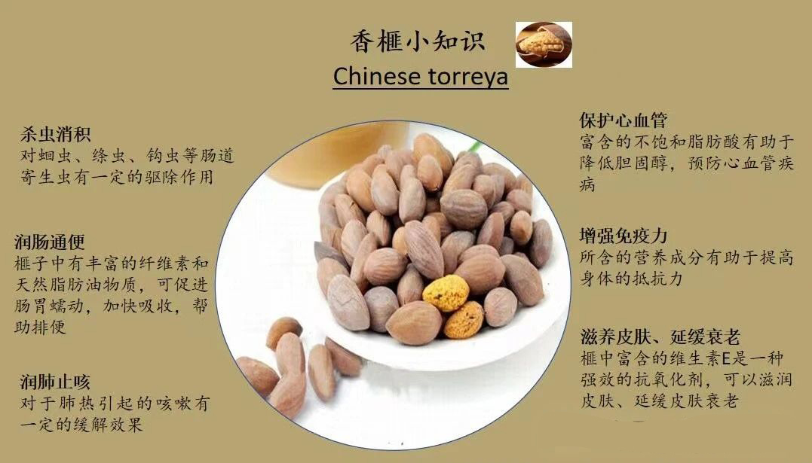

特色产品
香榧

香榧果实，味香而美，营养丰富。果中含有油达42%，蛋白质10%，脂肪4%，并含有钙、磷、钾等成分。除可炒食外，还可榨油、入药。香榧可用于驱除肠道的寄生虫，如钩虫、蛔虫等，都有较好的效果。据载，每天空腹嚼食3—40粒炒熟的香榧，连服3—4天，可除钩虫。儿童服量，可酌减。嚼食生香榧，逐虫效果更佳。香榧具有出色的杀虫消积的功效。它的特殊成分能够有效驱除肠道内的寄生虫，帮助消化，消除积食，对于食欲不振、消化不良的人来说，香榧无疑是一种天然的良药。香榧还有润肠通便的作用。它含有丰富的膳食纤维，可以促进肠道蠕动，帮助排便，对于便秘患者来说，长期食用香榧能够起到很好的改善作用。香榧的润肺止咳效果也颇为显著。它所含的丰富营养素和抗氧化物质，能够滋阴润肺，清热止咳，对于喉咙痛、声音嘶哑等症状有一定的缓解作用，是呼吸道疾病患者的福音。香榧还有保护心血管的功效。
了解更多
